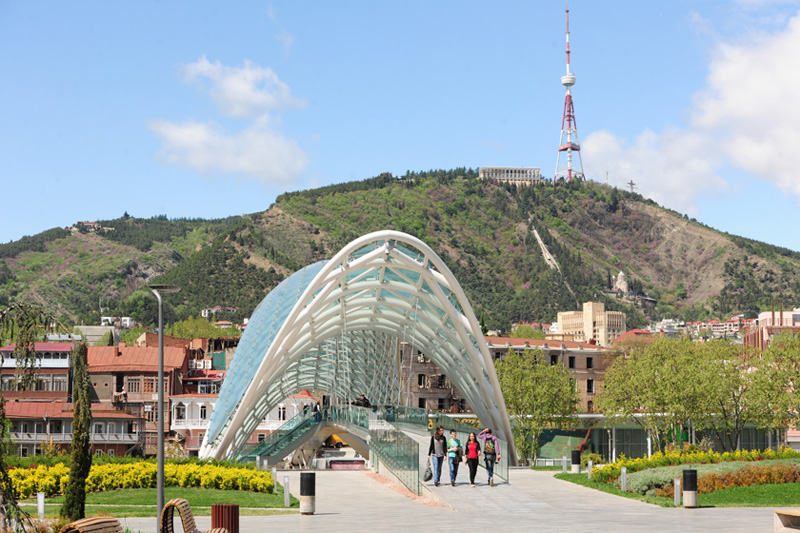

Tbilisi Highlights Half Day Walking Tour
">Highlights
- Enjoy fantastic aerial views
- Explore the local streets on a walking tour of the city
- All entrance fees included
- Private guide for a more personalized experience
What You Can Expect
This tour to Tbilisi is about exploring a key-city in the heart of the Caucasus. Romantic and cosy city with rich history attracts thousands of travellers from all over the world. The beauty of this mountainous land and its unique Georgian culture inspired many well-known writers, artists and poets who had dedicated to Georgia their greatest works. This one-day Tbilisi tour features all must-see sights from centuries old church and fortress to contemporary symbols of the city. By the end of the tour, one can definitely say “I’ve been to the place!”
Even if you only have a short time in Tbilisi, you have to spend at least a half-day exploring the Old Town. The architecture in the city’s historic district is a mixture of Georgian, Byzantine, Oriental and Neo-Classical European styles.
Our guide and driver will meet you at your hotel for sightseeing tour in Tbilisi. Start at Holy Trinity cathedral, one of the largest Orthodox cathedrals in the world. Continue to Metekhi church and monument to Vakhtang Gorgasali, the legendary founder of Tbilisi. Take cable car to Narikala Fortress to enjoy breathtaking panoramic view of the city. Walk down to the district of Sulphur bath houses passing by the only mosque in Tbilisi. Stroll through the Sharden area full of narrow streets with cosy cafés, wine tasting bars, souvenir shops, and breathe in the living past. Visit Sioni Cathedral, Anchiskhati Basilica, and the clock tower of famous Rezo Gabriadze Theatre.
Details
Inclusions
- Entrance fees
- Local guide
- Hotel pickup and drop-off
- Entrance ticket fees to the museums, mausoleums and other sights
- Cable car ride to Narikala fortress
Additional info
- Departure point: Your place of stay in Tbilisi
- Departure time: 11 AM
- Duration: 5 hours (approx.)
- Return details: Your place of stay in Tbilisi
Prising: 40$ per pax
*note: price on viator is more and you pay in advance. with us you only pay by cash at the meeting place.